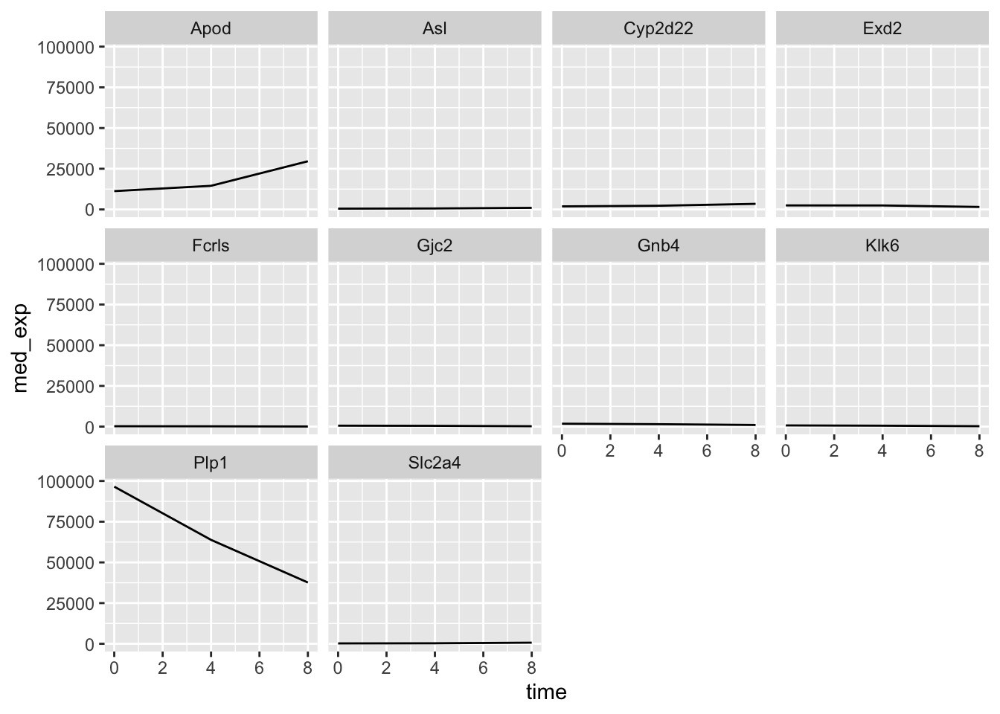

Lesson 6: Data visualisation with ggplot
This is the course handbook for WolfWorks: An introduction to R.
Objectives:
- Understand how to create a set of mappings from variables in the data to the
aestheticsof a ggplot - Be aware of different geometric objects that we can add to a plot
- Create different layers of a ggplot by using the
+operator - Change the
themeof a ggplot - Use faceting to display different groups of data on different plots -
facet_grid()vs.facet_wrap() - Know how to export plots using
ggsave()
An introduction to ggplot2
The final part of this workshop will introduce you to key tools required for plotting anda data visualisation. Why is data visualisation important?
- Contributes to decision-making during analysis e.g., plotting residuals can indicate whether a statistical test is appropriate or not
- Allows the user to understand their data better and be confident in their processing and analysis
- Can help to identify when something has gone wrong i.e., if a plot does not look as expected
- Ultimately, data is published in a visual form and figures are one of the first things that a researcher will look at in a paper
The ggplot2 package makes it simple to create publication-quality figures from data stored in a data.frame or tibble. As a note, the 2 in ggplot2 simply refers to the fact that this is the most up-to-date version of the package.
We will cover the main points needed to use ggplot2, but for additional information see the Data Visualisation Cheat Sheet.
The grammar of graphics in ggplot
The main function within the ggplot2 package is ggplot() - this is what we will use to create our visualisations. The theoretical foundation that supports the use of ggplot2 is the Grammar of Graphics (what the gg stands for). This is the idea that you can build every graph from the same three components:
- A data set - either a
data.frameortibble. Of note,ggplot2functions like data in a long format. - A coordinate system - provided by mapping variables to visual properties of objects in the plot, termed aesthetics
- A
geomto specify the type of plot required
In terms of code, this looks like:
ggplot(data = <DATA>, mapping = aes(<MAPPINGS>)) + <GEOM_FUNCTION>
Let’s deal with these three components one at a time.
1. The data set
The first argument that we pass to the ggplot() function is data =. We use this to specify our data.frame or tibble. If we are piping data into the ggplot() function, then we do not need to specify the data = argument.
ggplot(data = rna_tbl)
If we execute this code by itself, what we see is that a plotting pane has been opened.
2. Aesthetics mappings
We now need to specify aesthetics mappings. This will tell the ggplot() function how we want to map variables within our data to visual aspects. The aesthetic mappings take properties of our data and use them to determine visual characteristics such as position, colour, size, shape, or transparency The most simple aesthetic mapping is defining which variables to put on our x- and y-axes.
ggplot(data = rna_tbl,
aes(x = time, y = expression))We now see that these variables appear on our plot.
3. Specifying geometric shapes via geoms
Finally, we tell ggplot() what type of plot we are trying to create. This requires us to specify what geometric objects we want on the plot - lines, points, bars, boxplots etc. We do this by using the + operator to add one of the following geoms to our plot:
geom_point- for individual points (i.e., scatter plot)geom_line- for linesgeom_smooth- for smoothed lines (e.g., simple trends)geom_bar- for bar chartsgeom_histogram- for binned valuesgeom_boxplot- for boxplots
Other geoms you may wish to explore:
geom_text- add text directly to the plotgeom_label- add text to directly to the plot (with a rectangle underneath giving a label-look)
ggplot(data = rna_tbl,
aes(x = time, y = expression)) +
geom_point()
The plot above is not particularly useful. Firstly, we have time points 2- and 6-days, which do not exist in our data. This is because time is currently a numeric variable, meaning that R treats it as continuous. In reality, we want to plot time as a factor with three categories - 0, 4 and 8-days post-treatment. Secondly, there are so many genes that we cannot really see the distribution of expression values. This plot would be much better suited as a boxplot. Let’s try to correct these two things.
rna_tbl %>%
mutate(time = factor(time)) %>%
ggplot(aes(x = time, y = expression)) +
geom_boxplot()Hmm, this still is not really what we want. Our data is so skewed that the distributions are difficult to see. One trick that is often used in such cases is to log the data in our plot.
rna_tbl %>%
mutate(time = factor(time)) %>%
ggplot(aes(x = time, y = log(expression))) +
geom_boxplot()## Warning: Removed 507 rows containing non-finite values (`stat_boxplot()`).
This looks better. We also get a warning tell us that some values were removed. These are the NA expression values in our data.
We can also add multiple geoms to a single ggplot.
rna_tbl %>%
mutate(time = factor(time)) %>%
ggplot(aes(x = time, y = log(expression))) +
geom_jitter(alpha = 0.2, color = "tomato") +
geom_boxplot(alpha = 0) ## Warning: Removed 507 rows containing non-finite values (`stat_boxplot()`).
When we plot multiple geom we need to be aware of the order in which we plot them. Whatever we plot first will end up at the back as ggplot and then new geoms are plotted on top. This is important to remember, for example if we want to use geom_text or geom_label to plot text or labels onto our plots.
Challenge: Using the Grammar of Graphics
Create the same plot as you produced previously in base-R, but this time using only tidyverse and ggplot2 functions. The plot is showing the expression of Ubfd1 at 8-days post-treatment in male and female mice.

Solution
rna_tbl %>%
filter(gene == "Ubfd1" & time == 8) %>%
mutate(sex = factor(sex, levels = c("Male", "Female"))) %>%
ggplot(aes(x = sex, y = expression, fill = sex)) +
geom_boxplot() +
scale_fill_manual(values = c("lightgreen", "orange")) +
xlab("Sex") +
ylab("Expression of Ubfd1") +
ggtitle("Expression of Ubfd1 at 8-days post-treatment") +
theme_bw() More details about aesthetics - in the plot vs. in the layers
As we discovered above, aesthetics can be mapped to the plot such that the plot visuals are dependent upon some variable in our data. This can include specifying which variables determine the x and y coordinates (or in some cases only one of these e.g., histograms only require an x variable as the y coordinate automatically represents frequency). In the example above we saw that we can also have data variables determining the colour of our plots.
Other aesthetic variables that can be altered:
- point shape:
shape - point size:
size` - line type:
line_type - line width:
size
- transparency:
alpha
Any aesthetics that are specified in the initial plot layer will be applied to all geoms that are added. For example, ggplot(aes(alpha = 0.2)) would make all geoms somewhat transparent. However, aesthetics can also be specified within specific geom layers so that they are only applied to these layers rather than universally.
Using themes in ggplot2
Another aspect of ggplot2 is themes - these include all non-data elements that you can control. Examples include text size, plot background colour, the presence or absence of grid lines, legend position etc. As with all of the other elements that we have come across so far, we add theme elements using the + operator. If we don’t specifically add these elements, the plot will simply use all of ggplot2’s defaults, which is what we did above.
Several themes exist in the ggplot2 package:
theme_grey()theme_bw()theme_light()theme_dark()theme_minimal()theme_classic()
Let’s try some of these out using the same plot as above:
## Adding black and white theme
rna_tbl %>%
mutate(time = factor(time)) %>%
ggplot(aes(x = time, y = log(expression))) +
geom_boxplot() +
theme_bw()## Adding dark theme
rna_tbl %>%
mutate(time = factor(time)) %>%
ggplot(aes(x = time, y = log(expression))) +
geom_boxplot() +
theme_dark()
We can also install other themes from other packages. There is even a package that includes ggplot themes based on films - ThemePark.
***
Faceting
Another really useful feature that ggplot2 gives us is faceting. Faceting lets us split a plot into subplots, or facets, based on a factor (categorical variable) within our dataset.
There are two faceting functions:
facet_wrap()= only creates plots for the combinations of variables that have values by “wrapping” these plots into 2d panelsfacet_grid()= creates a grid of plots for each combination of variables specified, even if these do not have values
Let’s get some data to plot. Create a new tibble called plotting_data that contains the median expression value for each gene at each time.
plotting_data <- rna_tbl %>%
filter(gene %in% rna_tbl$gene[1:10]) %>% # Take the top 10 gene names only
group_by(time, gene) %>%
summarise(med_exp = median(expression, na.rm = TRUE)) %>% # Get median expression of these 10 genes at each timepoint
select(gene, time, med_exp) # Select only relevant columns## `summarise()` has grouped output by 'time'. You can override using the `.groups` argument.plotting_data## # A tibble: 30 × 3
## # Groups: time [3]
## gene time med_exp
## <chr> <dbl> <dbl>
## 1 Apod 0 11258
## 2 Asl 0 481
## 3 Cyp2d22 0 1883
## 4 Exd2 0 2488
## 5 Fcrls 0 248
## 6 Gjc2 0 595
## 7 Gnb4 0 1791
## 8 Klk6 0 742
## 9 Plp1 0 96534
## 10 Slc2a4 0 249
## # ℹ 20 more rowsWe could plot the mecian expression of each of these genes over time on a single plot.
plotting_data %>%
ggplot(aes(x = time, y = med_exp)) +
geom_line()
Uh oh - this is not what we wanted. We plotted the data for all genes together rather than on a per-gene basis. To tell ggplot to give us a line per gene we need to include the group = gene argument in our aesthetics.
plotting_data %>%
ggplot(aes(x = time, y = med_exp, group = gene)) +
geom_line()
Question
What argument could we include if we wanted each of the genes to have a different coloured line? Where would this argument be specified?
Faceting allows us to create an entire plot per-gene, rather than having all of the genes on a single plot. Let’s look at the facet_wrap function first.
plotting_data %>%
ggplot(aes(x = time, y = med_exp)) +
geom_line() +
facet_wrap(~ gene)
Question
What do you notice about the y-axis of these plots?
If we wanted to allow each plot to have free scaling, we can use the scales = "free_y" argument within facet_wrap.
plotting_data %>%
ggplot(aes(x = time, y = med_exp)) +
geom_line() +
facet_wrap(~ gene, scales = "free_y")
What about if we try to do the same thing but usig facet_grid?
plotting_data %>%
ggplot(aes(x = time, y = med_exp)) +
geom_line() +
facet_grid(.~ gene)
Right now we only have a one-dimensional grid because be are only faceting on a single variable. If we wanted to see the median gene expression over time separately for males and females, we could group_by sex as well as gene and time. This way we can facet sex against gene and we get an even more informative plot.
plotting_data_2 <- rna_tbl %>%
filter(gene %in% rna_tbl$gene[1:10]) %>% # Take the top 10 gene names only
group_by(time, gene, sex) %>%
summarise(med_exp = median(expression, na.rm = TRUE)) %>% # Get median expression of these 10 genes at each timepoint for each sex
select(gene, time, med_exp, sex) # Select only relevant columns## `summarise()` has grouped output by 'time', 'gene'. You can override using the `.groups` argument.plotting_data_2## # A tibble: 60 × 4
## # Groups: time, gene [30]
## gene time med_exp sex
## <chr> <dbl> <dbl> <chr>
## 1 Apod 0 10802. Female
## 2 Apod 0 11812 Male
## 3 Asl 0 447 Female
## 4 Asl 0 481 Male
## 5 Cyp2d22 0 1750. Female
## 6 Cyp2d22 0 2008 Male
## 7 Exd2 0 2500. Female
## 8 Exd2 0 2488 Male
## 9 Fcrls 0 264. Female
## 10 Fcrls 0 248 Male
## # ℹ 50 more rowsplotting_data_2 %>%
ggplot(aes(x = time, y = med_exp)) +
geom_line() +
facet_grid(sex ~ gene)
Challenge: Creating complex ggplots
Using all of the skills we have learnt in this lesson, create a plot that shows mean gene expression of each chromosome throughout the course of infection.
Solution
rna_tbl %>%
group_by(chromosome_name, time) %>%
summarize(mean_exp = mean(expression)) %>%
ggplot(aes(x = time, y = mean_exp)) +
geom_line() +
facet_wrap(~ chromosome_name, scales = "free_y")## `summarise()` has grouped output by 'chromosome_name'. You can override using the `.groups` argument.